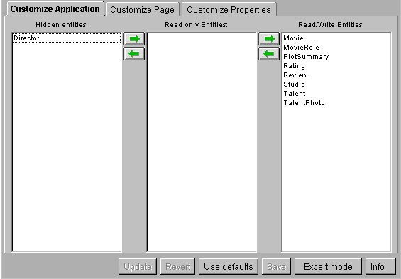

Table of Contents
Table of Contents  Next Section
Table of Contents
Next Section
Table of Contents  Previous Section
Previous Section
The user interface for accomplishing these tasks is simple, as the following example illustrates:

To specify an entity that shouldn't appear in the application, select it and use the arrow keys to move it to the Hidden Entities column. To specify an entity that should be read-only, select it and use the arrow keys to move it to the Read-only Entities column. You can also press Enter (or Return) to move selected entities right to left. By default, all entities initially appear in the Read/Write Entities column.
Table of Contents Next Section